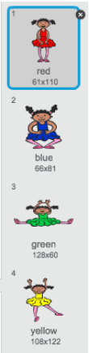

В цьому проекті ми створимо гру-на-пам'ять, де вам треба буде запам'ятати і повторити послідовність випадкових кольорів!
Крок 1: Випадкові кольори
Спочатку, створімо персонажа, який буде змінювати колір у випадковій послідовності.
Завдання для виконання
Створіть новий проект у Скретч та видаліть спрайт кота, так щоб проект став пустим. Онлайн Скретч-редактор знаходиться за посиланням jumpto.cc/scratch-new
Виберіть персонажа і фон. Ваш персонаж не обов'язково має бути людиною, але він має бути здатним показати різні кольори.
screenshot
В цій грі, для кожного кольору ви використовуватимете різні числа:
1 = червоний;
2 = блакитний;
3 = зелений;
4 = жовтий.
Дайте своєму персонажу 4 різні образи, кожен різного кольору, з тих, що зазначені вище. Переконайтесь, що кольорові костюми в правильному порядку.

screenshot
Крок 2: Управління човном
Завдання для виконання
Натисніть на кнопку "Завантажити спрайт з файлу" і додайте малюнок "boat.png". Вам потрібно зменшити спрайт і помістити його у початкове положення.
screenshotscreenshot
Якщо хочете, можете намалювати свій власний човен!
Ви будете керувати човном за допомогою миші. Додайте наступний код до свого човна:
screenshot
Протестуйте свій човен, натиснувши на значок із зеленим прапорцем і переміщаючи мишку. Чи пливе човен за мишкою?
screenshot
Що відбувається, коли човен досягає вказівника миші?
Щоб це зупинити, потрібно додати блок якщо щоб човен рухався тільки тоді, коли він знаходиться на відстані 5 пікселів від вказівника миші.
screenshot
Протестуйте човен знову і перевірте чи проблема вирішилась.
Крок 3: Аварія!
Човен може пропливати через дерев'яні бар'єри! Треба це поправити.
Завдання для виконання
Вам потрібно 2 образи для човна, один звичайний, інший - для випадків, коли човен виходить з ладу. Образи потрібно назвати "звичайний" і "пошкоджений".
Натисніть на "пошкоджений" образ і скористайтесь інструментом "Вибрати", щоб захопити, переміщати і обертати частинки човна. Зробіть так, щоб човен мав вигляд розбитого.
screenshot
Додайте цей код до човна, всередині блоку завжди, щоб він розбивався, коли торкається будь-якого коричневого дерев'яного уламку:
screenshot
Слід також потурбуватись, щоб човен завжди починав подорож у "звичайному" вигляді.
Тепер, коли ви спробуєте плисти через дерев'яні бар'єри, ви зможете побачити, що човен розбивається і рухається назад до початку.
screenshot
Виклик: Перемога!
Чи можете ви додати ще одне судження if до коду човна, щоб гравець вигравав тоді, коли дістається до острову?
Коли човен досягає жовтого безлюдного острову, з'являється напис "Ураа!"" і гра припиняється. Ви можете використовувати наступний код:
screenshot
Виклик: Звукові ефекти
Ви можете додати до гри звукові ефекти, коли човен розбивається або досягає острова в кінці гри.
Можна навіть додати фонову музику.
Крок 4: Обмеження часу
Додаймо до гри таймер, щоб гравець спробував дістатися безлюдного острову якомога швидше.
Завдання для виконання
Додайте нову змінну з ім'ям час. Також можна змінити відображення нової змінної, клікаючи по ній на сцені.
screenshot
Додайте цей код до сцени, щоб таймер лічив час доти, доки човен не дістанеться острову:
screenshot
Готово! Протестуйте вашу гру і перевірте, як швидко ви можете дістатися безлюдного острова!
screenshot
Крок 5: Перешкоди і бонуси
Ця гра занадто проста - давайте зробимо її більш цікавою.
Завдання для виконання
Спочатку додамо деякі активні елементи, які пришвидшать човен. Відредагуйте фонове зображення і додайте кілька білих стрілок.
screenshot
Тепер ви можете додати код до циклу вашого човна завжди, щоб при пропливанні над білими стрілками він переміщався на 2 додаткові кроки.
screenshot
Можна також додати рухомі ворота, яких човен повинен уникнути. Додайте новий графічний об'єкт з ім'ям "ворота", який виглядає наступним чином:
screenshot
Переконайтеся, що колір воріт збігається з кольором інших дерев'яних перешкод.
Встановіть центр на спрайті воріт.
screenshot
Додайте код, щоб ворота завжди оберталися.
Протестуйте гру. Тепер в грі з'явилися ворота, які обертаються і яких треба уникати.
screenshot
Виклик: Більше перешкод!
Чи можна додати більше перешкод для вашої гри? Нижче наводяться кілька ідей:
До фонового зображення можна додати зелені ділянки болота, які уповільнюють швидкість човна, коли він на них натрапляє. Для цього використовується блок чекати:
screenshotscreenshot
Ще можна додати рухомі об'єкти, такі як колода або акула!
screenshot
Ці блоки можуть вам допомогти:
screenshot
Якщо ваш новий об'єкт не коричневого кольору, вам потрібно буде додати до човна ще й такий код:
screenshot
Виклик: Більше човнів!
Чи можна перетворити вашу гру в гонку між 2 гравцями?
Продублюйте спрайт човна, і змініть його ім'я на "Гравець 2", також змініть його колір.
screenshot
Змініть початкову позицію для Гравця 2, змінивши цей код:
screenshot
Видаліть код, що використовується для керування човном мишкою:
screenshot
...і замініть його на код, який буде керувати човном за допомогою клавіш зі стрілками.
Для руху вперед використувуйте наступний код:
screenshot
Аналогічно для повороту човна при натисканні лівої і правої клавіші стрілок використовуйте код поворот.
Виклик: Більше рівнів!
Чи можете ви створити додаткові фонові зображення, а також дозволити гравцеві вибирати рівні?